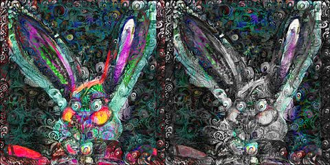

by Athena Novo · Async Art Master #5869 · day/night · time rule: UTC
Updates twice a day to reflect day / night cycles.

Day 06:00–18:59 · Night 19:00–05:59 (UTC)
The full-size files live on IPFS; each is linked on three public gateways, in the order to try them (gateway.pinata.cloud, ipfs.io, dweb.link). Every line says what our own check found: 3 we keep this file pinned, 1 our own copy, pinned here and verified on upload.
QmTTfoA13Cd4QD… gateway.pinata.cloud · ipfs.io · dweb.link — we keep this file pinned, checked 2026-09-23 09:13QmeFpM1H5BMdNG… gateway.pinata.cloud · ipfs.io · dweb.link — we keep this file pinned, checked 2026-09-23 09:13bafybeihv7arge… gateway.pinata.cloud · ipfs.io · dweb.link — our own copy, pinned here and verified on upload, checked 2026-09-22QmPQV3mxMQbdut… gateway.pinata.cloud · ipfs.io · dweb.link — we keep this file pinned, checked 2026-09-23 09:13QmTTfoA13Cd4QD… gateway.pinata.cloud · ipfs.io · dweb.link — we keep this file pinned, checked 2026-09-23 09:13QmTTfoA13Cd4QD… gateway.pinata.cloud · ipfs.io · dweb.link — we keep this file pinned, checked 2026-09-23 09:13QmeFpM1H5BMdNG… gateway.pinata.cloud · ipfs.io · dweb.link — we keep this file pinned, checked 2026-09-23 09:13Part of Athena Novo's Animal Kingdom Divergents idea. A non-formal project with anime like foxes and wolves that are just visually unbalanced. Lovely works indeed!! Veeeery lovely.. Sometimes 2 pieces, sometimes 4 pieces.. Equally wild GIFs intended to be minted on KO. AN, Async, 22
async.art · OpenSea · Etherscan
Generated archive pages. Content identifiers point to the public IPFS network.